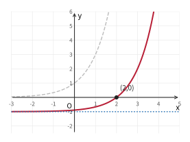
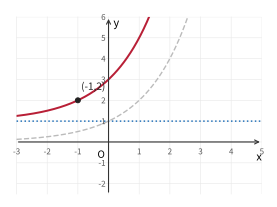
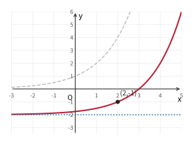

別冊練習問題 8 の解答 指数関数のグラフの平行移動と漸近線
(1) \(y=3^x\) のグラフを \(x\) 軸方向に \(2\)、\(y\) 軸方向に \(-1\) だけ平行移動したグラフの方程式、漸近線の方程式、および \((0,1)\) が移る点の座標を求めよ。
平行移動
\(y=3^x\) を \(x\) 方向に \(2\)、\(y\) 方向に \(-1\) 平行移動。
\[y=3^{x-2}-1\]漸近線
漸近線は直線 \(y=-1\)。

通る点
\((0,1)\) は \((2,0)\) に移る。
【答案】
\[y=3^{x-2}-1,\ \ y=-1,\ \ (2,0)\]答
(2) \(y=2^x\) のグラフを \(x\) 軸方向に \(-1\)、\(y\) 軸方向に \(1\) だけ平行移動したグラフの方程式、漸近線の方程式、および \((0,1)\) が移る点の座標を求めよ。
平行移動
\(y=2^x\) を \(x\) 方向に \(-1\)、\(y\) 方向に \(1\) 平行移動。
\[y=2^{x+1}+1\]漸近線
漸近線は直線 \(y=1\)。

通る点
\((0,1)\) は \((-1,2)\) に移る。
【答案】
\[y=2^{x+1}+1,\ \ y=1,\ \ (-1,2)\]答
(3) \(y=2^x\) のグラフを \(x\) 軸方向に \(2\)、\(y\) 軸方向に \(-2\) だけ平行移動したグラフの方程式、漸近線の方程式、および \((0,1)\) が移る点の座標を求めよ。
平行移動
\(y=2^x\) を \(x\) 方向に \(2\)、\(y\) 方向に \(-2\) 平行移動。
\[y=2^{x-2}-2\]漸近線
漸近線は直線 \(y=-2\)。

通る点
\((0,1)\) は \((2,-1)\) に移る。
【答案】
\[y=2^{x-2}-2,\ \ y=-2,\ \ (2,-1)\]答